Moto Ranger
操作說明書
汽機車維修紀錄系統 — 後台管理與前台網站
https://main.motoranger.net
2026-06-12
01 入門
1.1 登入系統
開啟瀏覽器進入 https://main.motoranger.net/admin(本地開發為
http://127.0.0.1:8088/admin),輸入 E-Mail
與密碼後按「登入」。
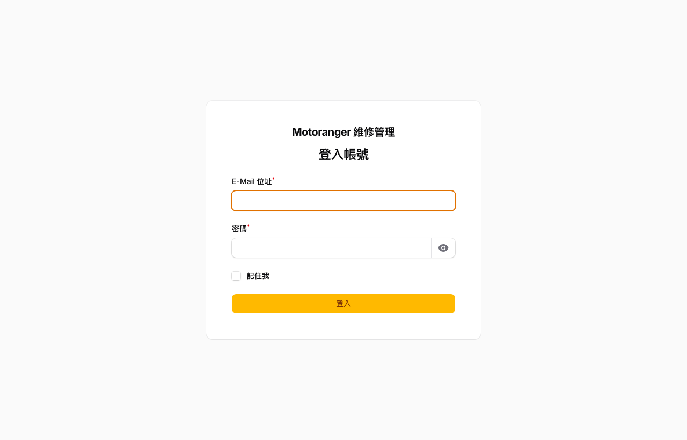
登入頁
帳號由管理員在「員工」功能中建立;忘記密碼請聯絡系統管理員重設。
1.2 介面導覽
登入後進入系統主畫面:
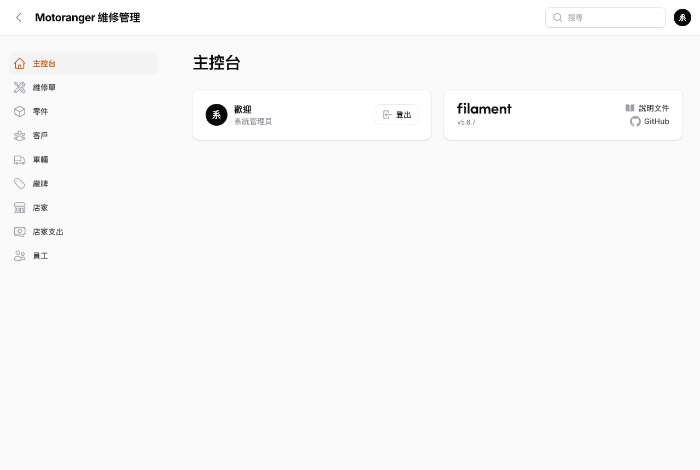
系統主畫面
- 左側選單:維修單、零件、客戶、車輛、廠牌、店家、店家支出、員工,點擊即切換功能。
- 頂部搜尋(全域搜尋):可直接輸入
客戶姓名、手機、車牌、維修單號,快速跳到對應資料。
- 右上角頭像:登出系統。
- 側欄可收合,手機與平板亦可操作(響應式介面)。
1.3 角色權限
| 角色 |
說明 |
| 管理員 (admin) |
全部功能,含員工帳號管理 |
| 一般員工 (user) |
日常維修、客戶、零件作業 |
02 維修單
維修單是系統核心:從估價、維修到收款交車,都在同一張單上完成。
2.1 維修單列表
左側選單點「維修單」:
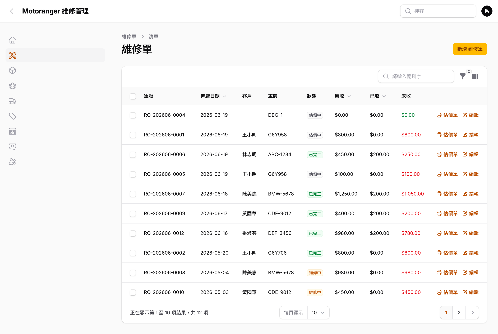
維修單列表
- 欄位:單號、進廠日期、客戶、車牌、狀態、應收、已收、未收(紅字代表尚有未收款)。
- 上方可依狀態(估價中/已確認/維修中/已完工/已交車/已取消)與店家篩選。
- 搜尋框可輸入單號、客戶姓名、車牌。
- 每列右側:「估價單」直接開啟列印頁、「編輯」進入維修單。
2.2 建立維修單
點右上「新增 維修單」:
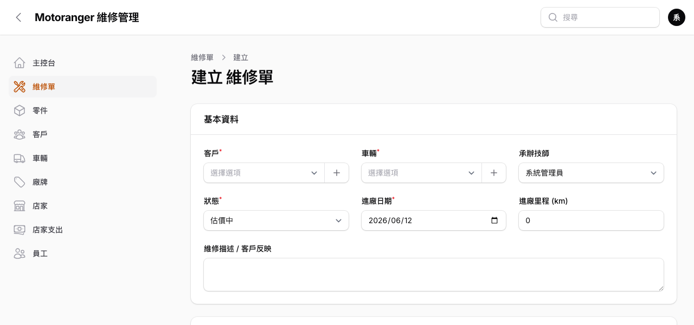
建立維修單
- 客戶:輸入姓名或手機搜尋;新客戶可直接按「+」快速建立(姓名、手機、地址)。
- 車輛:選定客戶後,下拉只會列出該客戶的車;新車同樣可按「+」快速建立(車牌、廠牌、車型),選擇車輛後會自動帶入該車最新里程。
- 承辦技師:預設為目前登入者。
- 狀態:新單預設「估價中」,可隨進度改為已確認 → 維修中
→ 已完工 → 已交車。
- 進廠日期 / 進廠里程 /
維修描述:記錄客戶反映的問題。
2.3 維修項目與金額
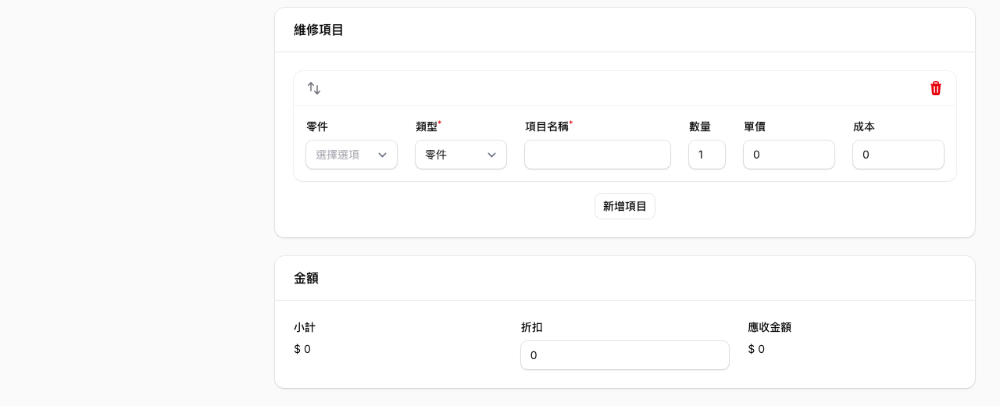
維修項目與金額
- 在「維修項目」按「新增項目」逐列輸入;選擇零件會自動帶入品名、售價與成本,工資類型則直接輸入名稱與金額。
- 數量、單價修改時,下方「小計 /
應收金額」即時計算;「折扣」欄輸入折讓金額。
- 儲存後系統自動回寫單頭的小計、應收與已收。
2.4 現場照片(拍照)
「現場照片」區按「新增照片」即可上傳;手機操作時可直接喚起相機拍照。照片支援裁切編輯,並跟著維修單保存,客人掃
QR Code 時也能看到。
2.5 收款與備注
進入維修單「編輯」頁面,捲動至底部:
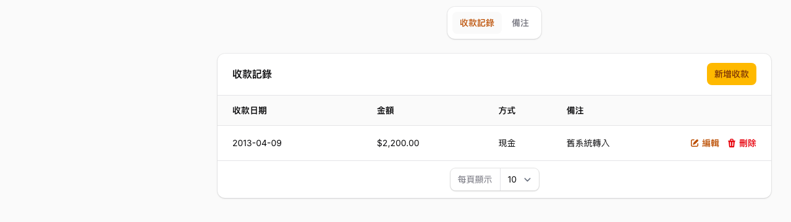
收款與備注
- 收款記錄:按「新增收款」輸入金額、方式(現金/轉帳/刷卡)、日期;未收金額自動更新。
- 備注:員工的內部備注、以及客人掃碼留言都會顯示在這裡,含作者與時間。
03 估價單與 QR Code
3.1 列印估價單
維修單列表每列的「估價單」按鈕會在新分頁開啟列印版面:
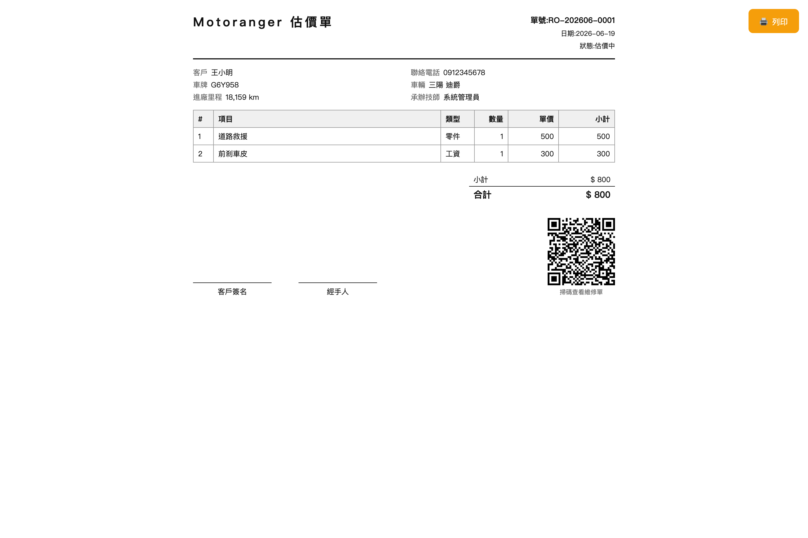
估價單列印頁
- 內容:店家抬頭(店名/地址/電話/統編)、單號、日期、客戶與車輛資訊、維修項目明細、小計/折扣/合計/已收/未收、客戶簽名與經手人欄位。
- 右上角「🖨
列印」即叫出瀏覽器列印(成本欄不會出現在估價單上)。
- 左下角附 QR
Code,客人掃描即可在手機上查看這張單據。
3.2 客人掃碼查詢(公開頁)
客人掃 QR Code
後開啟的頁面(帶簽名保護的專屬連結,他人無法猜測網址):
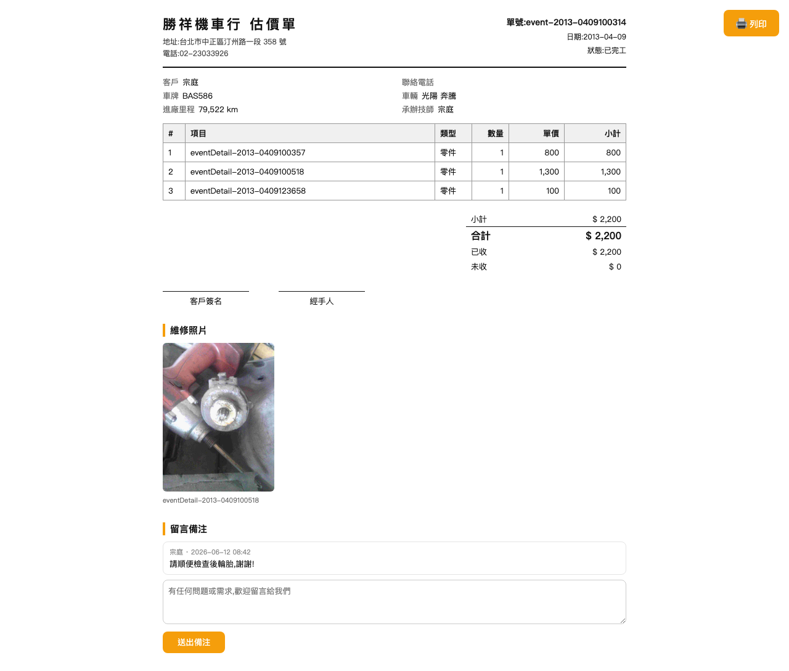
客人掃碼頁
- 客人可查看:維修明細、金額、維修照片。
- 留言備注:客人可直接在頁面下方留言(例如「請順便檢查後輪胎」),留言會出現在該維修單的「備注」中,作者顯示為該客戶。
- 此頁為唯讀,客人無法修改單據內容。
04 客戶與車輛
4.1 客戶列表與搜尋
左側選單點「客戶」:
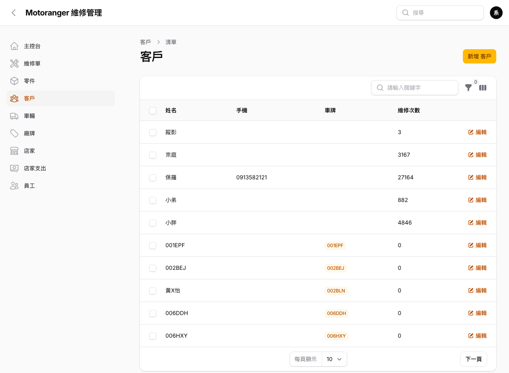
客戶列表
- 欄位:姓名、手機、車牌(同客戶多台車會並列顯示)、維修次數。
- 搜尋框輸入姓名、手機或車牌皆可找到客戶;頂部全域搜尋也支援相同條件。
4.2 客戶資料與名下車輛
點「編輯」進入客戶資料:
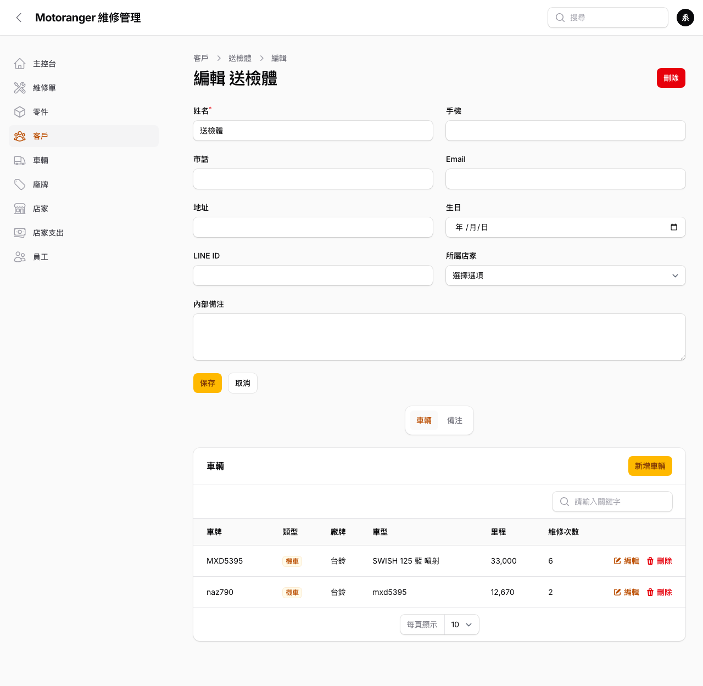
客戶編輯
- 基本資料:姓名、手機、市話、Email、地址、生日、LINE
ID、內部備注。
- 下方「車輛」區直接管理該客戶名下所有車(新增車輛、編輯、檢視維修次數)。
- 「備注」區記錄客戶相關的注意事項(誰寫的、何時寫的都會留存)。
4.3 車輛列表
左側選單點「車輛」可瀏覽所有車:
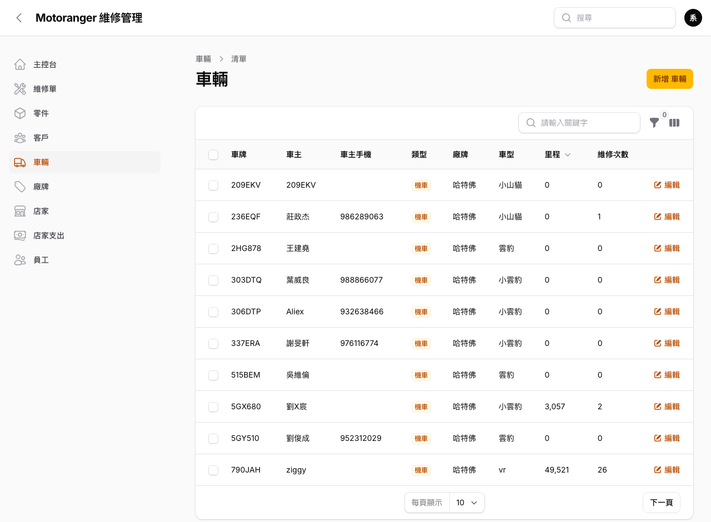
車輛列表
- 欄位:車牌、車主、車主手機、類型(機車/汽車)、廠牌、車型、里程、維修次數。
- 可依類型與廠牌篩選;搜尋支援車牌、車主姓名、手機。
- 車輛資料包含:車牌、廠牌、車型、年份、排氣量、顏色、車身號碼、引擎號碼、最新里程,並可上傳車輛照片。
05 零件
左側選單點「零件」管理零件目錄:
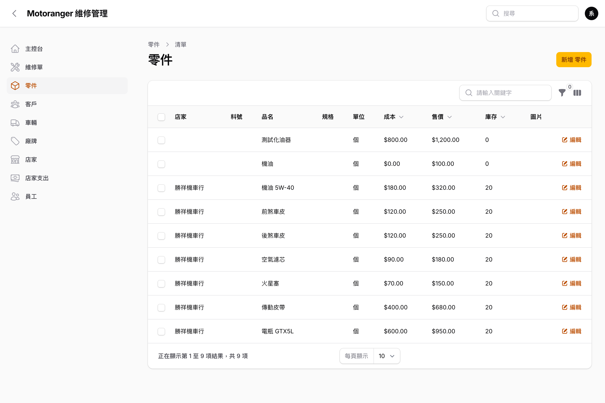
零件列表
- 欄位:料號、品名、規格、單位、成本、售價、庫存。
- 建立維修單時選擇零件,會自動帶入品名、售價與成本,加快開單速度。
- 常用耗材(機油、煞車皮、濾芯…)建議先建檔;一次性的特殊零件也可以不建檔,直接在維修項目打名稱即可。
- 零件可上傳圖片、填寫說明,並指定所屬店家。
06 基礎資料
6.1 廠牌
「廠牌」維護車輛廠牌(YAMAHA、HONDA、SYM…),類型分機車/汽車/其他,供車輛建檔時選用。
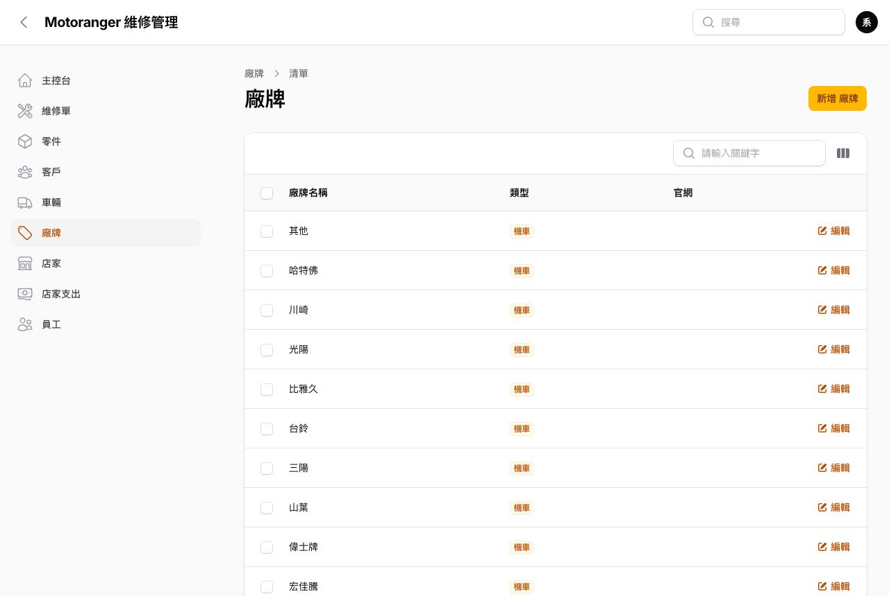
廠牌列表
6.2 店家
「店家」維護門市資料:店名、電話、地址、統一編號、Logo。這些資訊會印在估價單抬頭上。
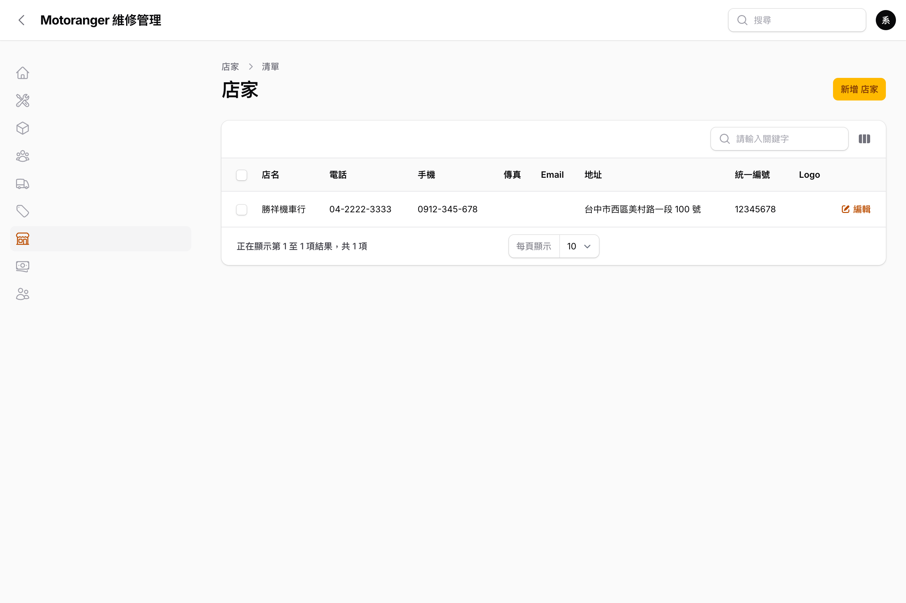
店家列表
6.3 店家支出
「店家支出」記錄房租、水電等營業成本,日後產出損益報表使用。
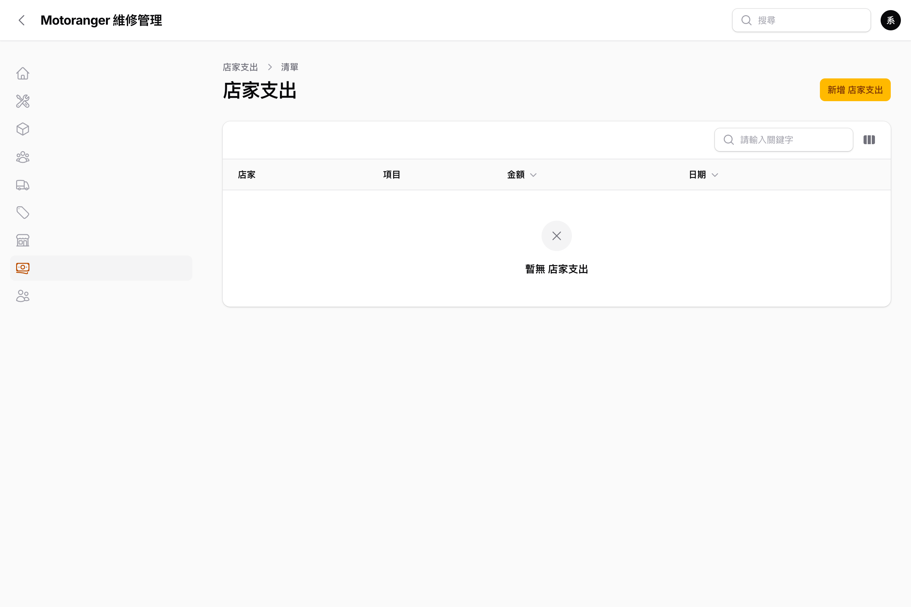
店家支出
6.4 員工帳號
「員工」由管理員維護登入帳號:
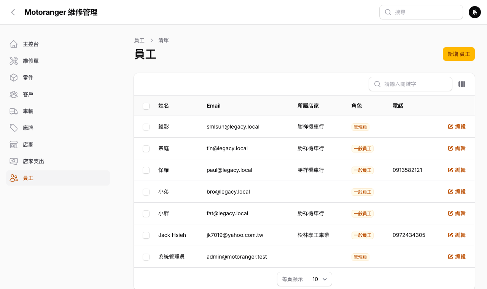
員工列表
- 角色:管理員(全部功能)/
一般員工。
- 新增員工時設定姓名、Email(即登入帳號)、密碼、所屬店家。
- 編輯時密碼欄留空代表不變更;要重設密碼直接輸入新密碼儲存即可。
07 前台網站
前台 https://main.motoranger.net
是對外形象頁與維修動態看板,不需登入。
7.1 首頁
前台首頁
- 品牌標語與功能介紹。
- 右上角「店家登入」即進入後台(
/admin)。
7.2 維修動態
首頁下方公開展示目前的維修狀況:
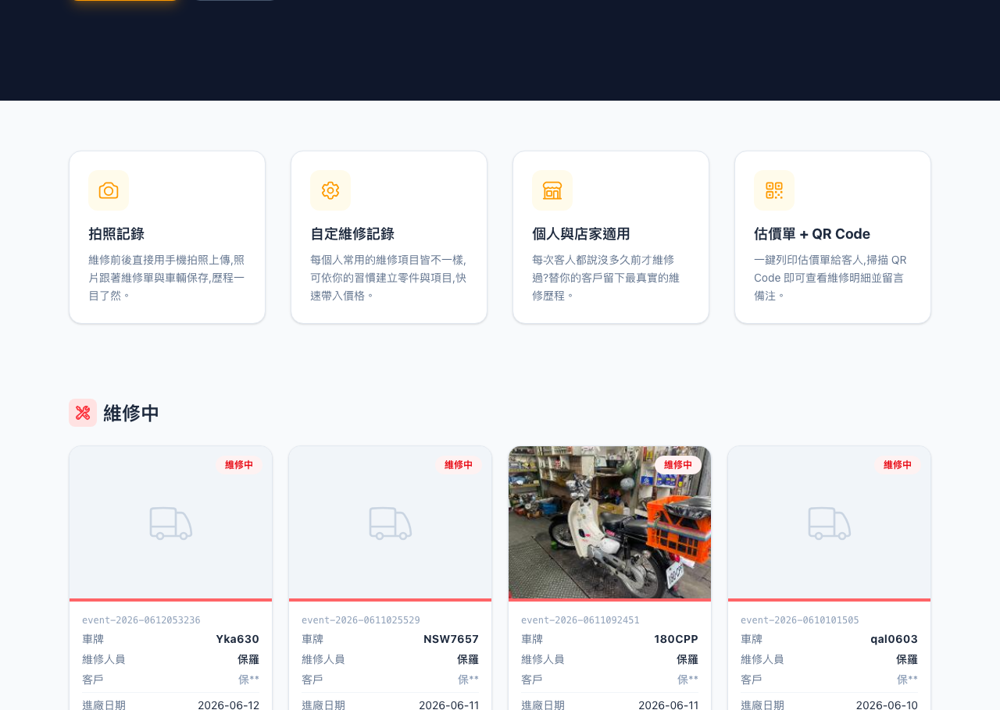
維修動態
- 維修中(紅色標籤)與維修完成(綠色標籤)各顯示最新
8 筆。
- 卡片內容:車輛照片、單號、車牌、維修人員、進廠日期。
- 隱私保護:客戶姓名一律打碼只顯示姓氏(例:王**),不會洩漏個資。